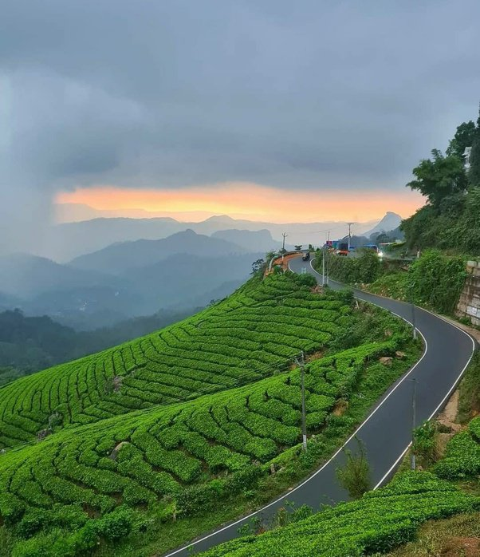

WAYANAD
Wayanad’s rich history stretches back to the Neolithic Age, with the Edakkal Caves being one of the oldest signs of human settlement to be discovered. The caves seem to have been inhabited by several human settlers over the course of time. Even though very little is known about these ancient settlers, the cave paintings at Edakkal, the burial sites discovered around the caves, and the ancient earthenware found within are proof of their existence.
The region is home to some of the oldest temples in India and also played a pivotal role in the worldwide spice trade. In fact it was the legendary spice gardens of Wayanad that prompted the European powers to establish direct sea routes to India. Many a war has been fought for the dominion of this lucrative trade. Even now the best pepper in the world comes from Wayanad’s green slopes.